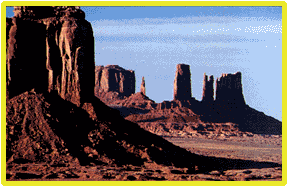
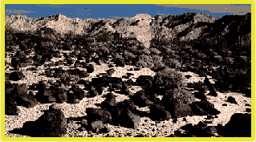
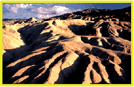
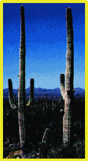

Deserts
 |
Granite Mountain |
| Monument Valley |
 |
|  |
Sonoran Desert |
| Zabriskie Point, Death Valley |
 |
 |
Death Valley dunesw |
| Saguaro Cactus, Sonoran Desert |
 |
| Water | Patterns of runoff |
Geophysics concepts
Reference
Lutgens & Tarbuck
Ch 9
| HyperPhysics | R Nave |